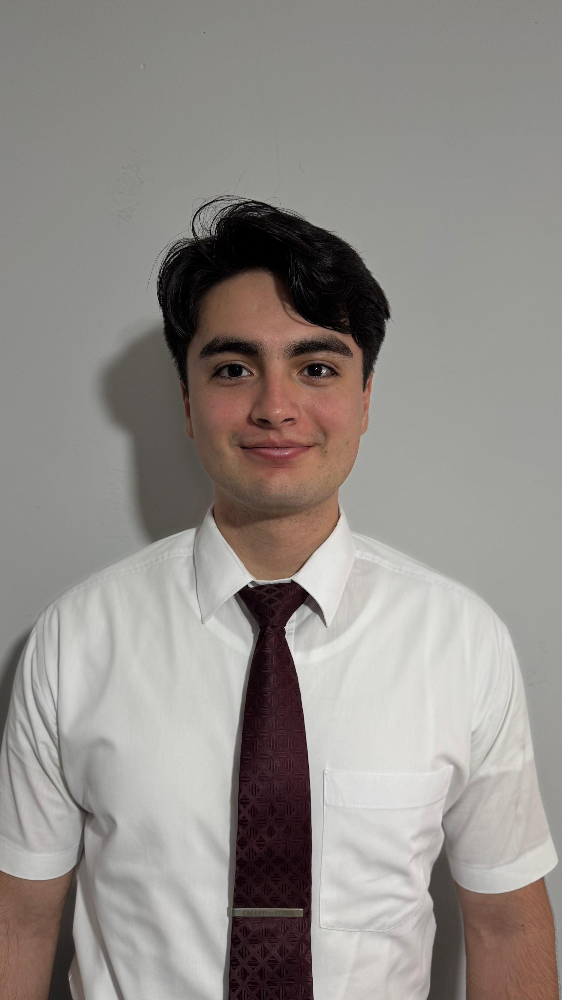

Project 1: Smart Budget Tracker
A web application designed to help users manage personal finances by tracking income and expenses.
Technologies used: HTML, CSS, JavaScript, Node.js
Smart Budget Tracker
High School Diploma - Science and Humanities Track
I am a passionate and dedicated student with a strong interest in technology and programming. I have a solid foundation in computer science and a keen desire to learn and grow in the field. I am eager to apply my skills and knowledge to real-world projects and contribute to innovative solutions, specially in cybersecurity.
A web application designed to help users manage personal finances by tracking income and expenses.
Technologies used: HTML, CSS, JavaScript, Node.js
Smart Budget TrackerAn academic project that suggests eco-friendly travel routes and accommodations for sustainable tourism.
Technologies used: Python, Flask, Google Maps API
EcoTravel PlannerA fictitious mobile app that provides workout routines, nutrition tips, and progress tracking for fitness enthusiasts.
Technologies used: React Native, Firebase, REST APIs
FitLife Mobile App